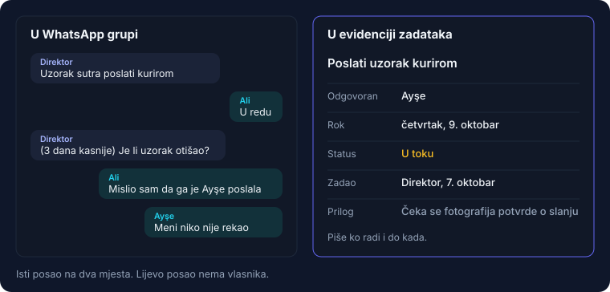
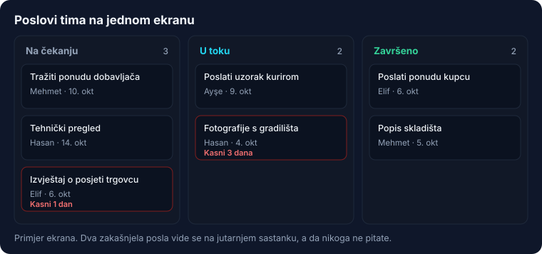

Zašto poslovi ostaju bez praćenja? Čemu služi softver za upravljanje zadacima
U firmi se većina poslova zadaje usmeno. Kaže se u hodniku, zamoli preko telefona, napiše u WhatsApp grupi. Dio zadatih poslova se uradi, dio zaboravi, a za dio se tri dana kasnije pita „šta je bilo s onim?“. Ovaj tekst objašnjava zašto poslovi ostaju bez praćenja i kako softver za upravljanje zadacima to rješava.

Gdje se posao izgubi?
WhatsApp grupa djeluje praktično za zadavanje poslova jer su svi u njoj. Ali u grupu dnevno stigne stotinu poruka. Poruka „pošaljimo onaj uzorak kurirom“, napisana ujutro, do podne je daleko gore na ekranu. Svako od troje ljudi koji su je vidjeli misli da se time bavi neko drugi.
Kod usmeno zadatog posla stanje je još nejasnije. Onaj ko je zadao posao sjeća se da ga je rekao. Onaj ko ga je dobio ne sjeća se do kada se traži ili to nije ni čuo. Nastane rasprava u kojoj su obojica u pravu, i dok se priča o tome ko je šta rekao, posao još nije urađen.

Dešava se i obrnuto: isti posao urade dvije osobe. Kupcu odu dvije različite ponude, dobavljača zovu dvaput. Ko gleda sa strane, vidi neurednu firmu.
Direktoru dan prolazi u provjeravanju
Kad poslovi nisu nigdje zapisani, praćenje ostaje na pamćenju direktora. Ujutro prvo pita svakoga redom: je li otišla ponuda, je li vozilo odvezeno na tehnički pregled, jesu li stigle fotografije s gradilišta? Tako prođe dobar dio dana.
Takav način rada ima još jednu nuspojavu. Kad direktor zaboravi pitati, zaboravi se i posao. Tim s vremenom nauči da posao za koji niko ne pita nije hitan.
Ista praznina pojavi se i kad neko napusti firmu ili ode na godišnji odmor. Koji su poslovi na njemu, zna samo njegov telefon i njegova glava. Onaj ko ga zamjenjuje počinje od nule, a obećanja data kupcima usput se pogube.
Šta mijenja softver za upravljanje zadacima?
Radi jednostavnu stvar: svaki posao pretvara u zapis. U zapisu su četiri podatka: šta je posao, ko ga radi, do kada i u kakvom je trenutno stanju. Kad su ta četiri podatka zapisana, većina gore navedenih problema nestane sama od sebe.
Osoba koja dobije posao na telefonu vidi svoju listu. Jasno je šta danas treba uraditi i šta kasni. Kad završi posao, označi ga i, ako treba, doda fotografiju ili dokument.
Onaj ko zadaje posao ne mora pitati. Otvori ekran i vidi šta je kod koga, šta je završeno, a šta kasni. Jutarnji sastanak je kraći; razgovara se samo o poslovima koji su zapeli.

Tu ulaze i poslovi koji se ponavljaju. Mjesečni popis, sedmična posjeta trgovcu, tehnički pregled vozila, obnova ugovora — takvi poslovi definišu se jednom i, kad dođe dan, sami se pojave na listi odgovorne osobe. Pamtiti ih više nije ničiji zadatak.
Za ekipe koje rade na terenu
U poslovima poput servisa, montaže i terenske prodaje ekipa veći dio dana provodi vani. Da biste saznali koliko je poslova usmeno podijeljenih ujutro urađeno do večeri, čekate da se svi vrate.
Kad zadaci stižu na telefon, terenska ekipa sa sobom nosi sljedeći posao, adresu i bilješku o kupcu. Kad završi posao, fotografiše ga i, ako treba, uzme potpis kupca. Ured to vidi u istom trenutku. Kad kupac nazove, možete reći „naša ekipa je otišla prije pola sata, posao je završen“.
Hoće li tim to doživjeti kao kontrolu?
Prva reakcija često ide u tom smjeru i treba je shvatiti ozbiljno. Ako sistem koristite samo da vidite ko kasni, tim će vrlo brzo naći način da samo označi posao i ide dalje.
Pristup koji daje rezultat jeste da sistem prvo olakša posao zaposleniku. Vidjeti svoje poslove na jednoj listi, riješiti se rasprave „meni niko nije rekao“, moći uredno predati poslove pred odmor — to je olakšanje i za zaposlenika. Kod uvođenja mi u prvoj sedmici ciljamo samo na to. Izvještaji i praćenje kašnjenja dolaze kasnije.
Kako početi?
Počnite s jednim timom i jednim pravilom: posao se smatra zadatim ako je upisan u sistem. I posao koji je rečen usmeno ili napisan u grupi naknadno se unosi u sistem. Ako se to pravilo održi dvije sedmice, ostalo je lako.
U početku se ne bavite detaljima kao što su kategorije, prioriteti i oznake. Posao, osoba i datum su dovoljni. Kako se tim navikava, dodajete polja koja vam zatrebaju.
Izbor alata je velik. Postoje lagane aplikacije koje prate samo zadatke, a postoje i sistemi koji rade zajedno sa zapisima kupaca i ponuda. Ako su vam zadaci vezani za kupca, narudžbu ili projekat, trebate gledati drugu vrstu (vidi Šta je upravljanje zadacima u CRM-u?). U suprotnom istu informaciju pišete na dva mjesta.
Česta pitanja
Moramo li potpuno napustiti WhatsApp?
Ne. Za dopisivanje ga možete i dalje koristiti. Mijenja se samo to da sam posao ne ostaje u poruci, nego ulazi u evidenciju.
Nije li to previše za firmu od deset ljudi?
Deset ljudi znači trideset-četrdeset različitih poslova dnevno. Jedna osoba ionako ne može sve to držati u glavi. Na toj veličini jednostavan alat je sasvim dovoljan.
Šta ako ga tim ne bude koristio?
Ako ga ne koristi direktor, neće ni tim. Kad se poslovi zadaju kroz sistem i status prati u sistemu, navika se stvori za nekoliko sedmica.
Naše povezane usluge: aplikacija za upravljanje zadacima i terenske timove, konsalting za digitalnu transformaciju.
Šablon za praćenje zadataka
Ko, koji posao, do kada; zakašnjeli posao crven, pregled po osobi. Besplatan Excel šablon.
Pogledaj šabloneUčinimo poslove vašeg tima vidljivim
Popišimo zajedno kako se poslovi danas zadaju i prate.
Razgovarajmo o vašem projektu